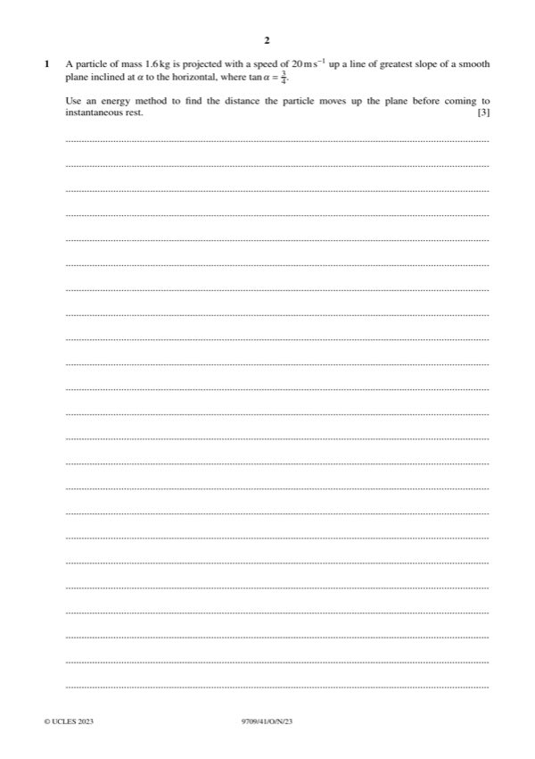
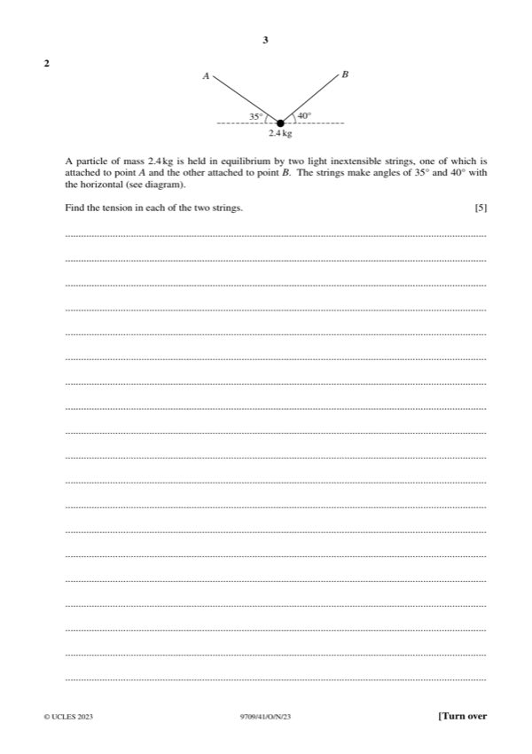
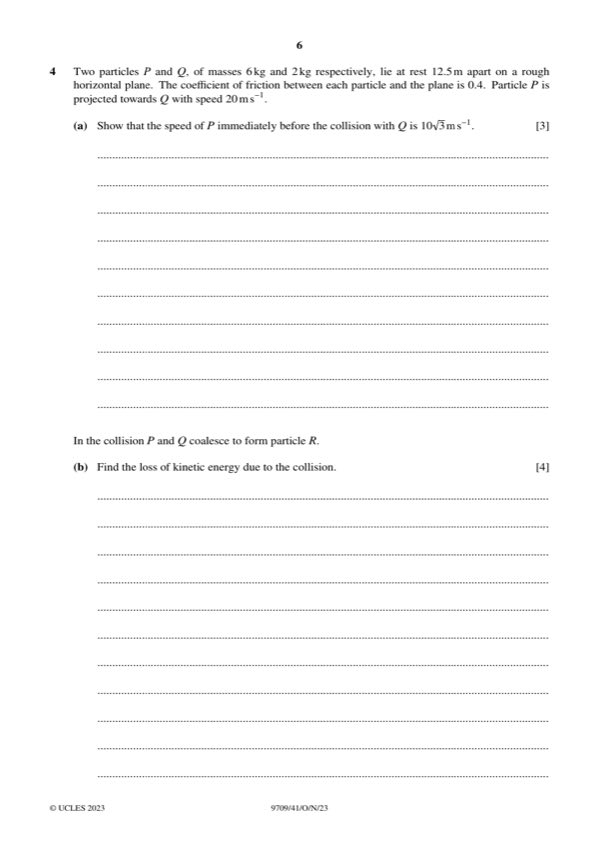
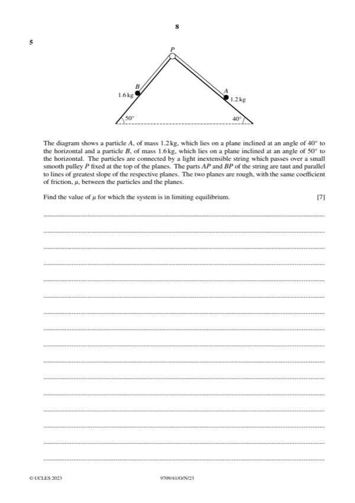
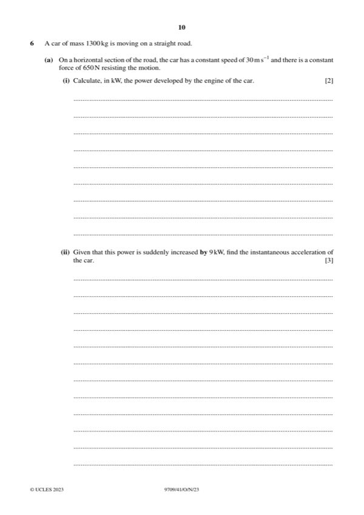
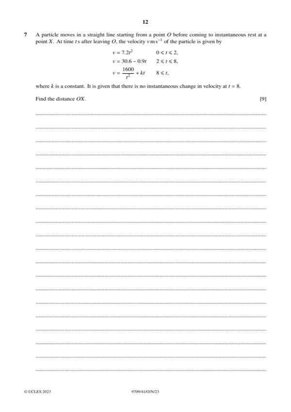

Question 0
Part 0 — solution
- [M1] Use of suvat for second section of deceleration. An
- [A1] –0.42 scores A0
Mark points
- [M1] Use of suvat for second section of deceleration. An
- [A1] –0.42 scores A0
Step-by-step solutions based on the mark scheme (not a mark-scheme dump).
Part 0 — solution

Part 1 — solution
Part 1 — solution
Part 1 — solution
Part 1 — solution
Part 1 — solution

Part 2 — solution
Answer: 5
Part 2 — solution
Part 2 — solution
Part 2 — solution
Answer: 2
Part 2 — solution
Part 2 — solution
Part 2 — solution
Part 2 — solution
Answer: 1311
Part 3 — solution
Part 3 — solution
Answer: 3
Part 3(a) — solution
Part 3(b) — solution
Part 3 — solution
Answer: 250 250
Part 3 — solution
Part 3 — solution
Part 3 — solution
Part 3 — solution

Part 4 — solution
Part 4(a) — solution
Part 4(c) — solution

Part 5 — solution
Part 5 — solution
Answer: 9

Part 6(a)(i) — solution
Part 6(b) — solution

Part 7 — solution
Part 13 — solution
Part 30 — solution
Part 82 — solution